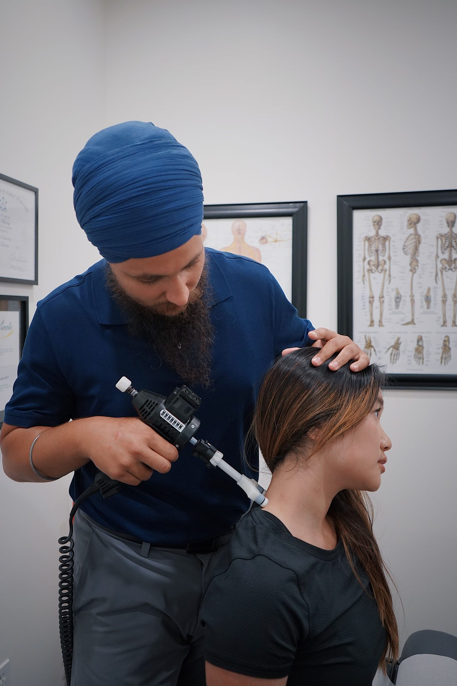

Chiropractic care in Boise
Wellness Chiropractic Care for All frames chiropractic care as regular spinal checks, for people with low back pain, neck pain, or headaches, with a commitment to convenient, affordable care for the entire family.
Wellness Chiropractic Care for All sits at 223 W State St in Boise. The practice frames chiropractic care as regular spinal checks, regardless of symptoms like low back pain, neck pain, or headaches, with convenient, affordable care for the entire family.

223 W State St, Boise, ID
Monday to Thursday, 10:00 AM to 6:00 PM